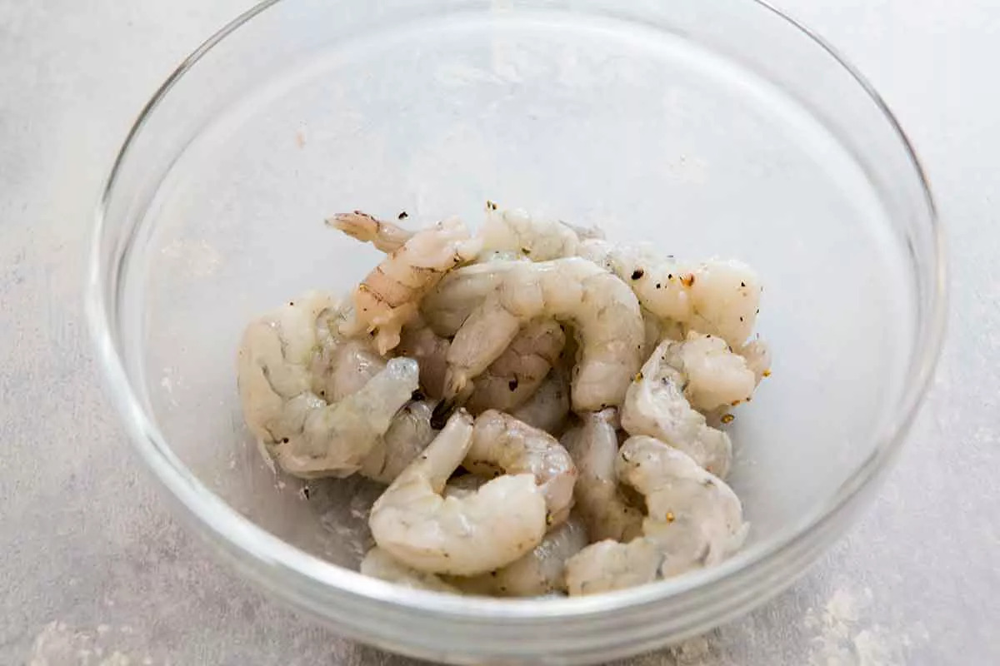
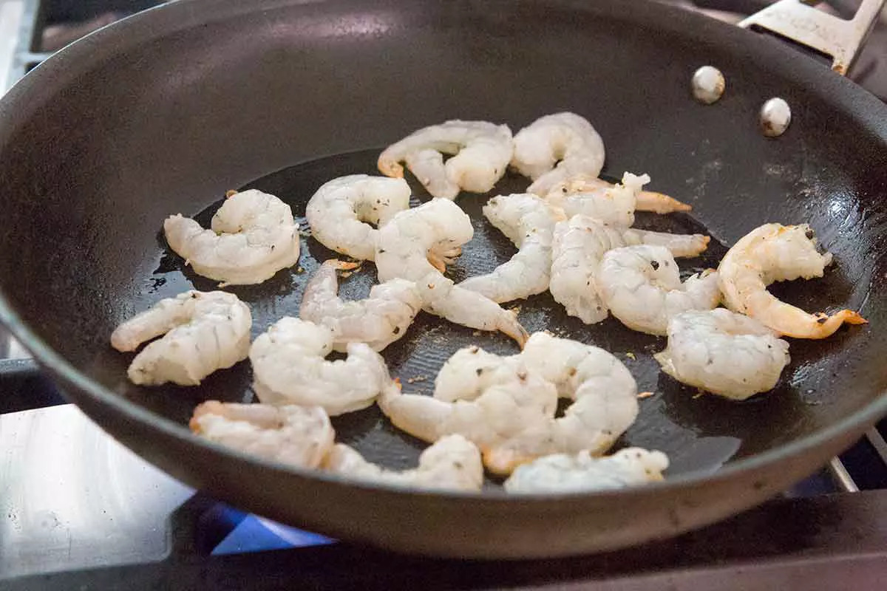
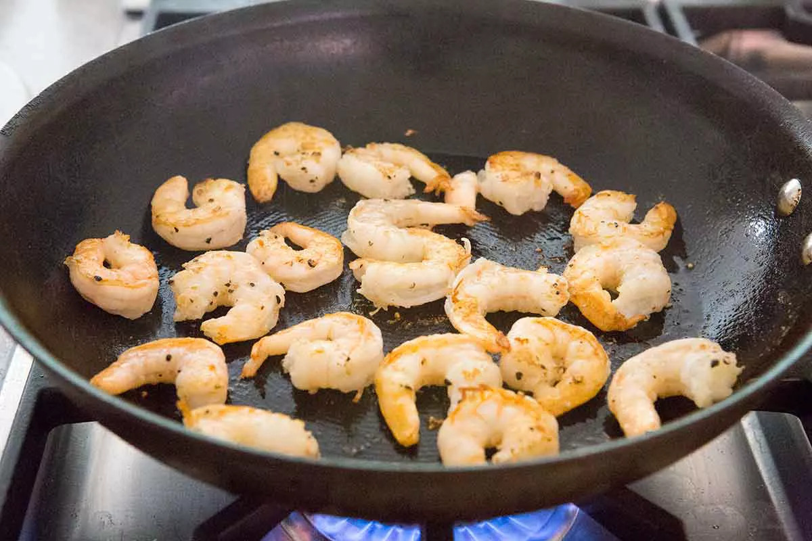
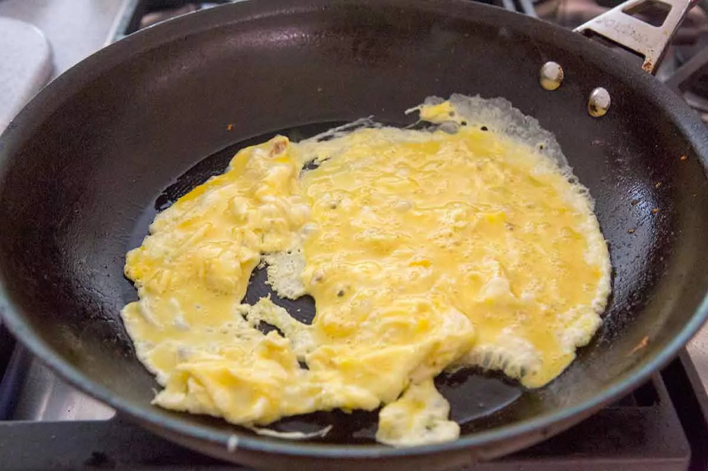
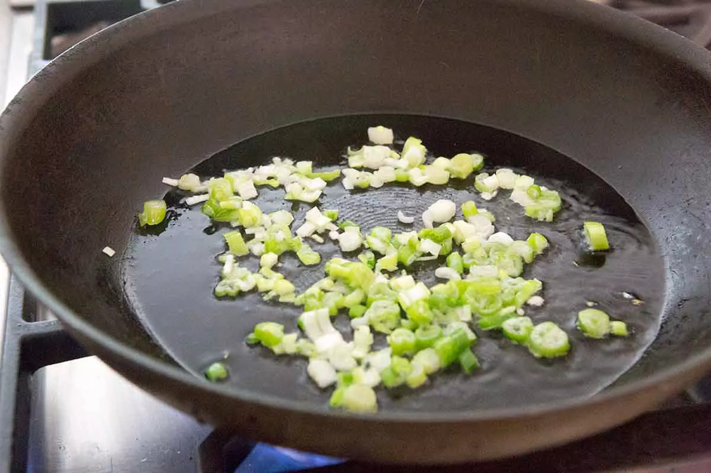
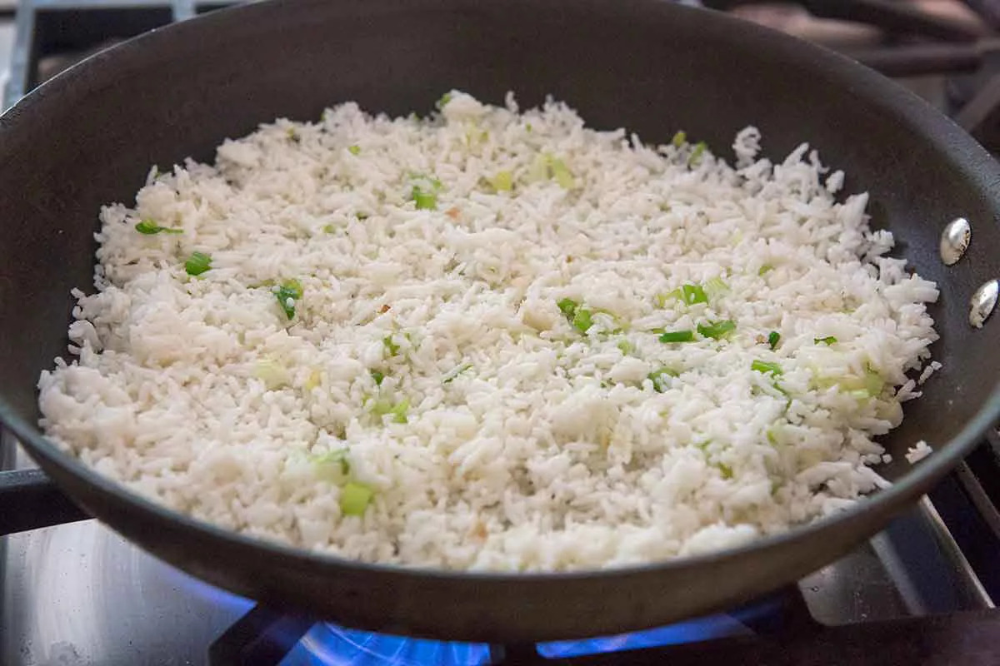
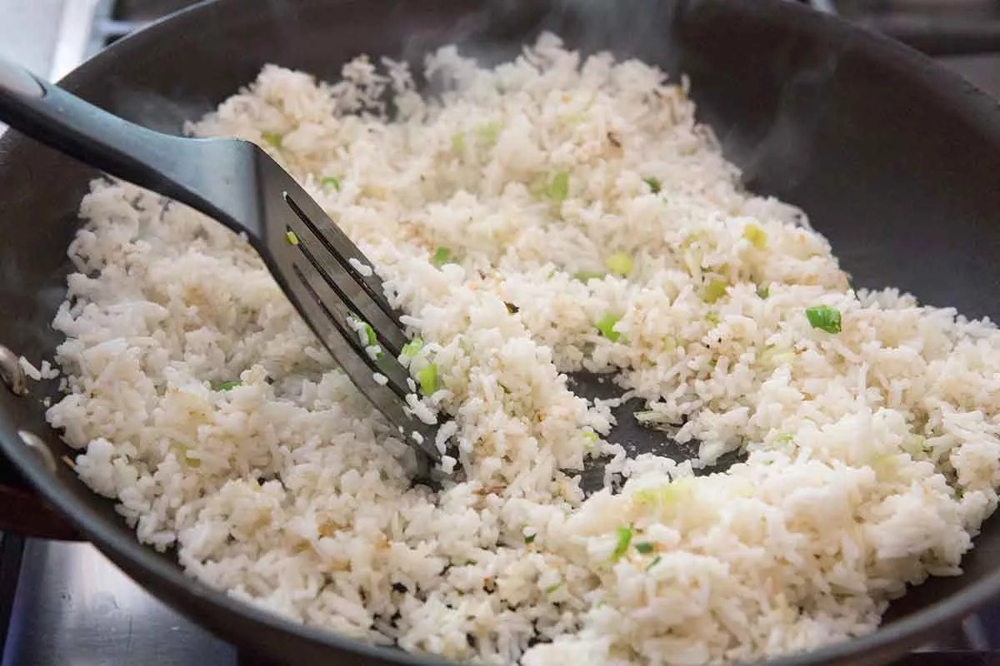
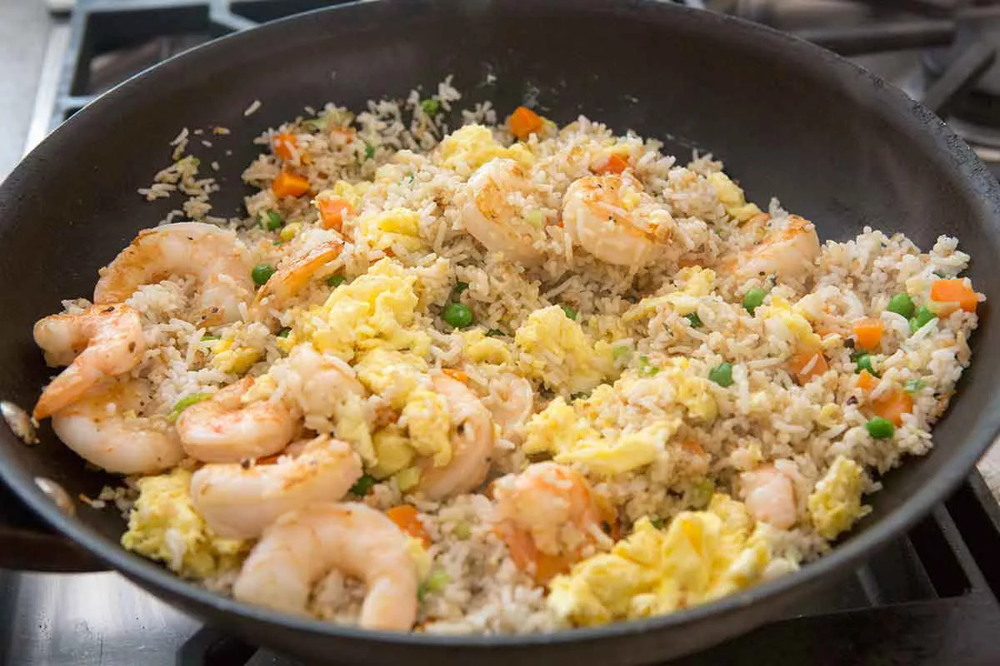

Classic Shrimp Fried Rice with fresh shrimp, rice, green onions, peas, carrots, and sesame oil. Tips for making the BEST fried rice!
Fried Rice is the perfect food to make if you dont know what to cook, especially if you have leftover rice, pretty much anything can go into fried rice. This Shrimp Fried Rice is easy to make and also tasty.
In a medium bowl, sprinkle the shrimp with salt,pepper, and cornstarch, and toss to coat. Set aside to sit for ten minutes at room temperature.
Heat a large saute pan or wok on high heat
When the pan is very hot,swirl in one tablespoon of the cooking oil to coat the pan
Add the shrimp to the hot pan,spreading them out quickly in a single layer. Let them fry in the pan without moving them, for 30 seconds.
 Flip the shrimp over and let them fry on the other side for another 30 seconds or until they are mostly cooked through.(Do not cook them all the way!)
Use a slotted spoon to scoop the shrimp out of the pan to a bowl
Return the pan to the burner and lower the heat to medium. Add a little more oil if the pan needs it. Add the beaten eggs and stir them quickly to scramble them while they cook.
When the eggs are not quite cooked through, still a bit runny, transfer them from the pan to the bowl with the cooked shrimp.
Clean out the pan or wok with paper towels and return it to the burner. Heat the pan on high and when it is hot, swirt in the remaining tablespoon or two of oil. WHen the oil is shimmering hot (almost smoking), add the green onions and saute for 15 seconds.
Then add the leftover cooked rice to the pan and stir with the green onions to mix well
Spread the rice onion mixture over the surface of the pan and let it fry, without moving it.You should hear the rice sizzle. Cook for about 1 to 2 minutes.
 Use a spatula to turn over the rice, and spread it over the pan again.Let cook for a minute longer.
Sprinkle soy sauce on the rice and stir to combine
Add the carrots, peas, shrimp, eggs, and sesame oil, stirring to combine well
Heat everything until sizzling hot. Add more soy sauce to taste.